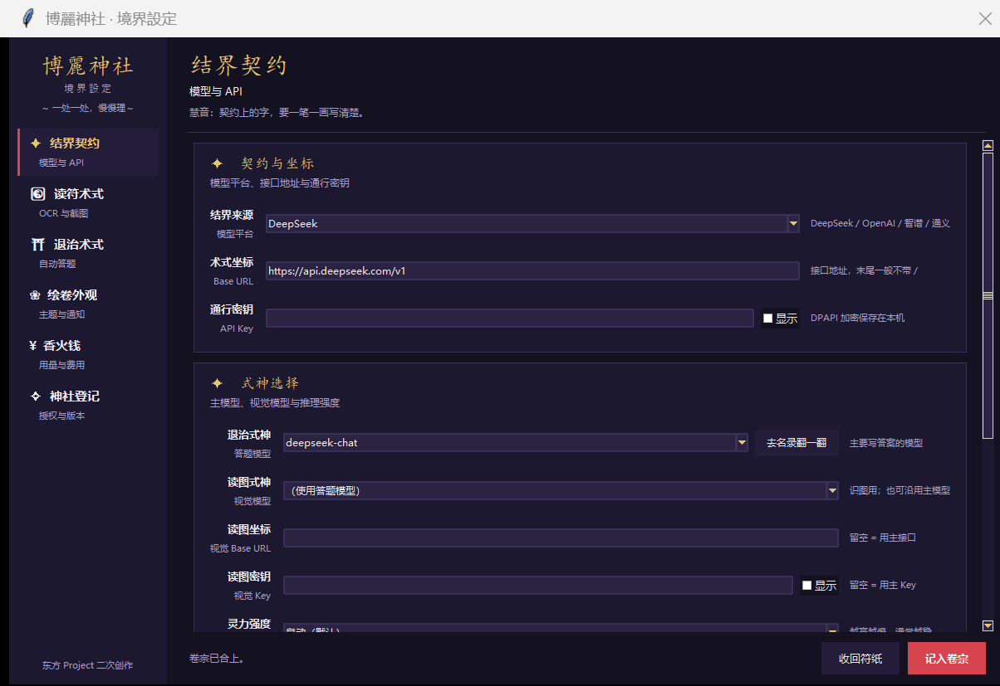
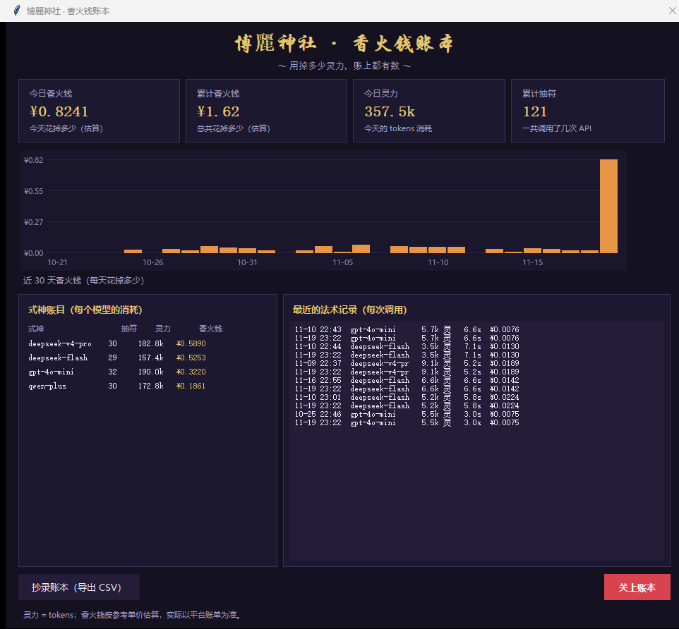
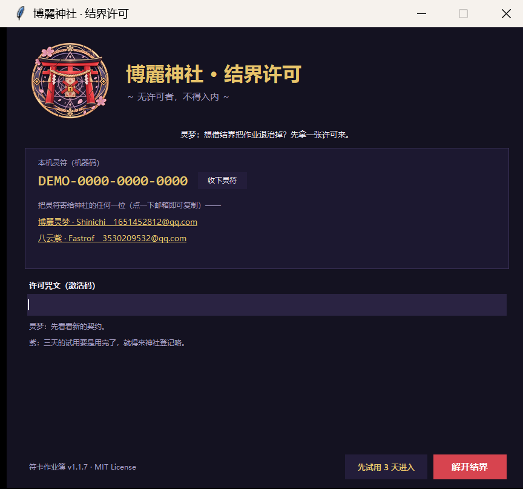
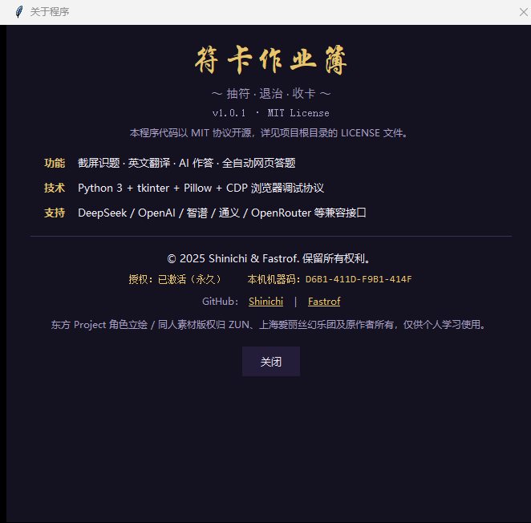
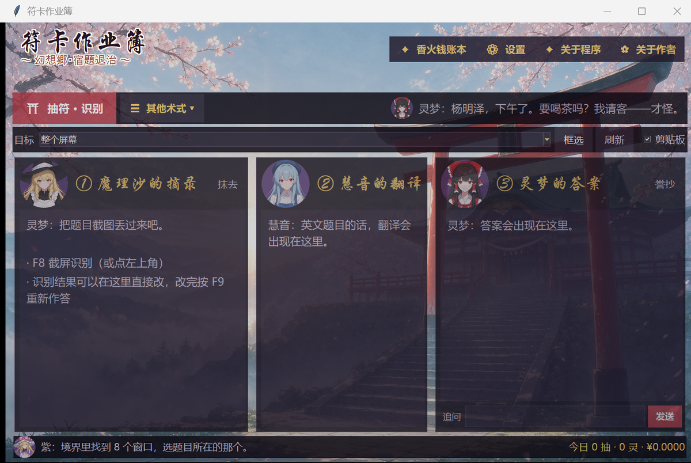
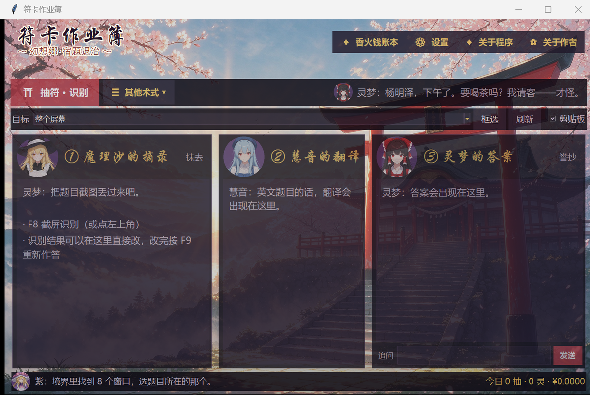
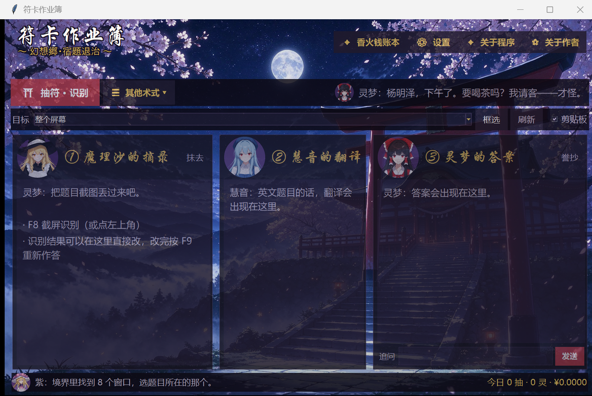
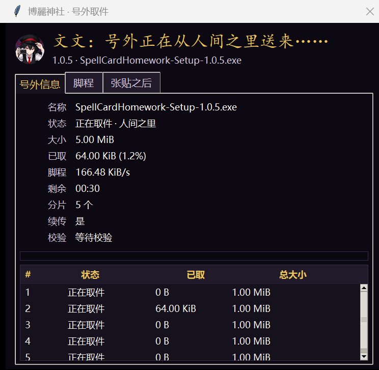
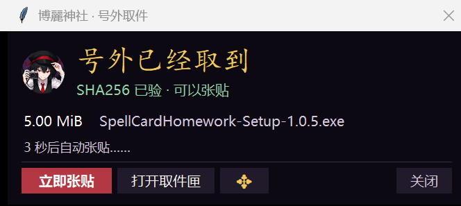

单选 / 多选
按选项字母与位置双重匹配，没字母的选项也能选对。
～ 抽符 · 退治 · 收卡 ～
按 F8，或者点左上角的「抽符 · 识别」。全屏、指定窗口、框选一块区域，灵梦都会把题目抽成文字。

DeepSeek、OpenAI、智谱、通义、OpenRouter、本地 Ollama 都能接。答题模型和识图模型可以分开配置。

张开结界后，程序通过 CDP 接管 Edge / Chrome，读题、填答案、交卷、翻页一条龙。
按选项字母与位置双重匹配，没字母的选项也能选对。
分数、根号、无穷等符号用 Unicode 粘贴，不会被编辑器吞掉。
按 Part 序号逐问作答，没填完不会提前翻页。
读取反馈提示重新计算，同一答案不会重复提交。
每次调用都记账：模型、输入/输出 tokens、耗时、费用估算，一个都不少。

首次启动先弹「博麗神社 · 结界许可」：可以点「先试用 5 天」，也可以拿激活码来解开结界。

红白神社配色、角色头像、启动图与横幅，全部是 AI 生成的东方二次创作。

界面里的词，其实都是这个意思
| 界面上的词 | 实际含义 |
|---|---|
| 结界来源 | 模型平台（DeepSeek / OpenAI / 智谱 / 通义…） |
| 术式坐标 | Base URL，接口地址 |
| 通行密钥 | API Key，用 Windows DPAPI 加密保存在本机 |
| 退治式神 | 答题用的模型 |
| 读图式神 / 读图坐标 / 读图密钥 | 识图用的视觉模型 / 接口 / Key |
| 灵力强度 | 推理强度（越高越慢、越稳） |
| 读符方式 | OCR 方式：自动 / 视觉模型 / 本地 OCR |
| 附加咒文 | JSON 自定义参数 |
| 香火钱 | API 余额查询 |
| 抽符方式 | 屏幕抓取方式 |
| 结界遮蔽 | 截图时本窗口自动让位 |
| 自动监视 | 自动监听间隔 / 静置 / 阈值 |
| 剪贴符纸 | 剪贴板自动识别（Win+Shift+S） |
| 结界范围 | 自动监听只扫浏览器前台 |
| 结界入口 | 网页调试端口 / 启动答题浏览器 |
| 入口坐标 | 点「张开结界」时打开的网址 |
| 神社登记 | 授权状态与本机灵符（机器码） |
输入符卡序列解锁的新主题。主界面和启动画面会跟着本地时间变化：早上、下午、晚上各有一张独立的背景。



发现新版本后可以点「让文文去取」：多线程下载、断点续传、SHA256 校验，验完自动覆盖安装并提示重启。

